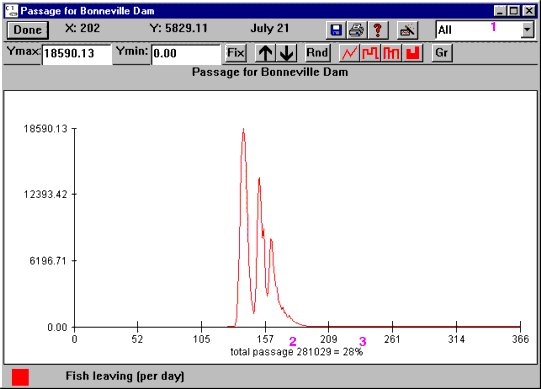

Passage: Passage Histograms
COMPASS computes daily fish passage on a release-specific basis for all river segments and dams. In COMPASS, passage and survival of fish through a reservoir is expressed in terms of the fish travel time through the reservoir, the predation rate in the reservoir, and a mortality rate resulting from fish exposure to total dissolved gas supersaturation, an effect called Gas Bubble Disease. Fish enter the forebay of a dam from the reservoir and experience predation during delays due to diel and flow related processes. They leave the forebay and pass the dam mainly at night through spill, bypass or turbine routes, or the fish are diverted to barges or trucks for transportation. Once they leave the forebay, each route has an associated Mortality rate and fish returning to the river are exposed to predators in the dam tailrace before they enter the next reservoir.
The Passage menu provides access to passage histograms for each reach and dam in the model and for each of the four dam passage methods: bypass, turbine, spillway, and transport. Passage histograms are also accessible by clicking on the desired location of the River Map (unless the Mouse Tool options have been redefined). In order to view passage data and histograms, the desired passage output data must be specified before running COMPASS.
- Open Output Settings.
- Select desired passage points for each passage type in Output Settings for Dams or Output Settings for Reaches windows and click OK.
- Run COMPASS.
- Select passage type and passage point from the Passage menu to open passage histogram.
Passage PassageDam: Opens fish passage histogram for selected dam.
PassageDam: Opens fish passage histogram for selected dam.
PassagePassageReach: Opens fish passage histogram for selected reach.
PassageBypassDam: Opens fish passage histogram for fish traveling through the bypass route at the dam.
PassageTurbineDam: Opens fish passage histogram for fish traveling through the turbines at the dam.
PassageSpillwayDam: Opens fish passage histogram for fish traveling through the spillway at the dam.
PassageTransportDam: Opens fish passage histogram for fish transported from the dam.
All Passage menu windows include a couple features which are not found in other Julian Day Output windows. Each passage histogram includes a species menu (1) in the upper-right corner of the window which allows you to view the survival and timing data for each species individually (Chinook 0, Chinook 1, or Steelhead) or for All species combined at the dam or reach. The default view is all species combined. Below the X-axis of the graph is the line "total passage # = %." This is the total number of fish passing the selected point--dam or reach--for each day (2) and the percentage of the total number of fish released for the entire system that pass through the selected point (3). For example, in a run where the total number of fish released is 1,000,000 and total passage at Bonneville Dam is 281,029, then the passage at Bonneville Dam is 28% of the total number of fish released. When you view passage for a specific species the percentage is of the total number of species released. If you are viewing Spillway, Bypass, Turbine, or Transport Passage, the percentage shown is the percent of the total number of fish released.

Passage for Bonneville Dam